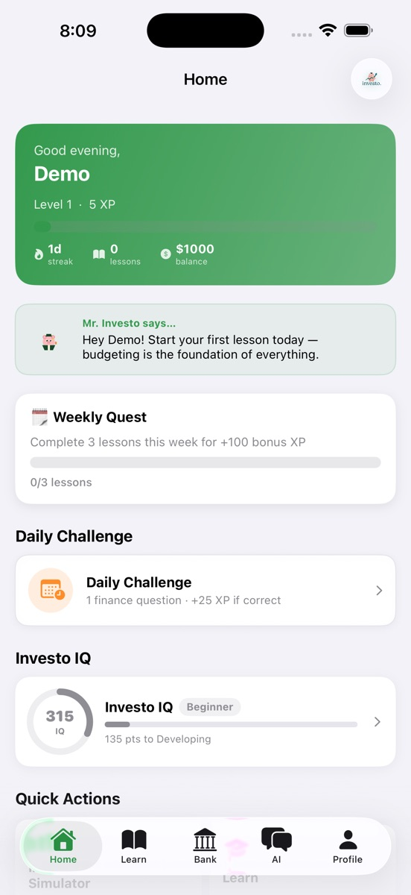
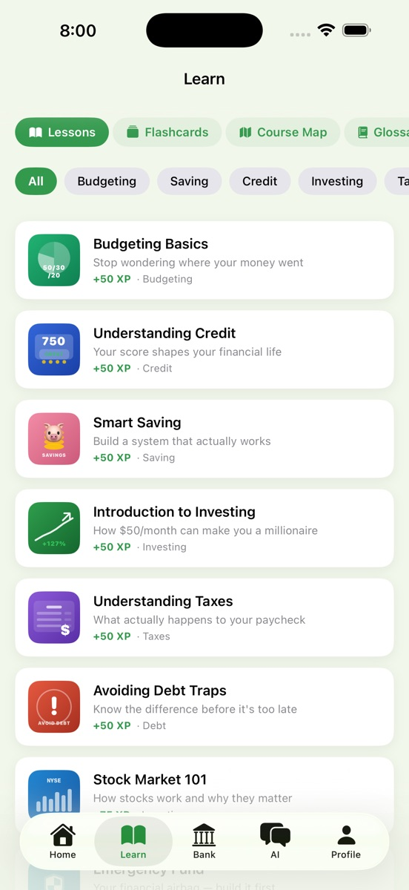
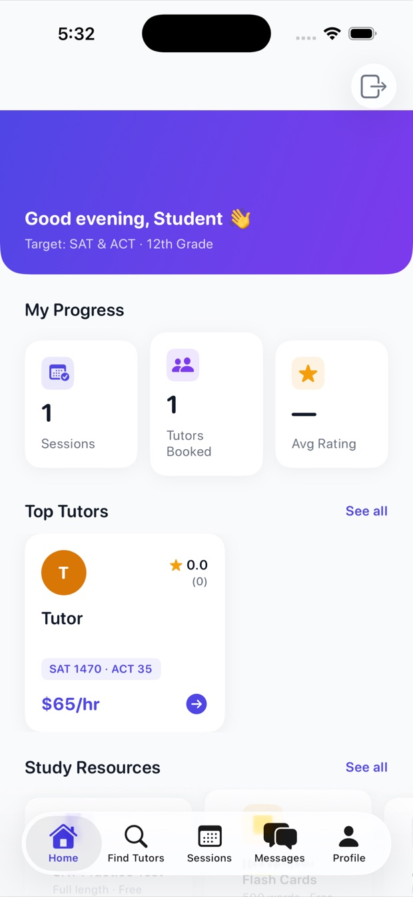
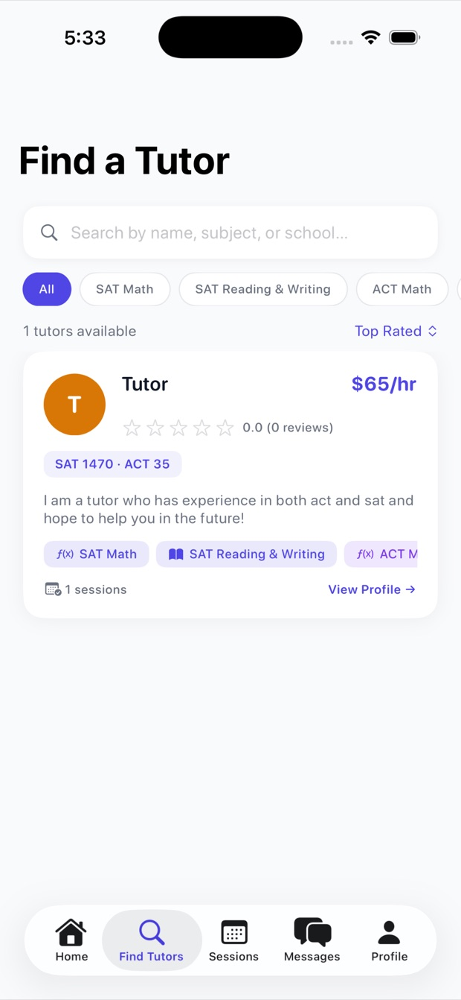
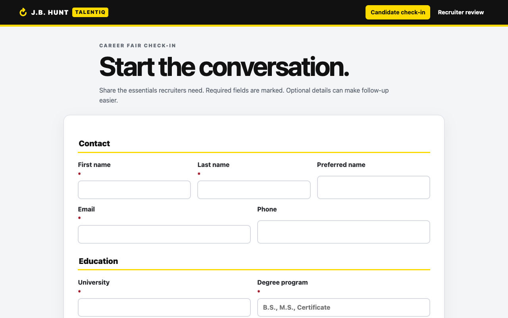
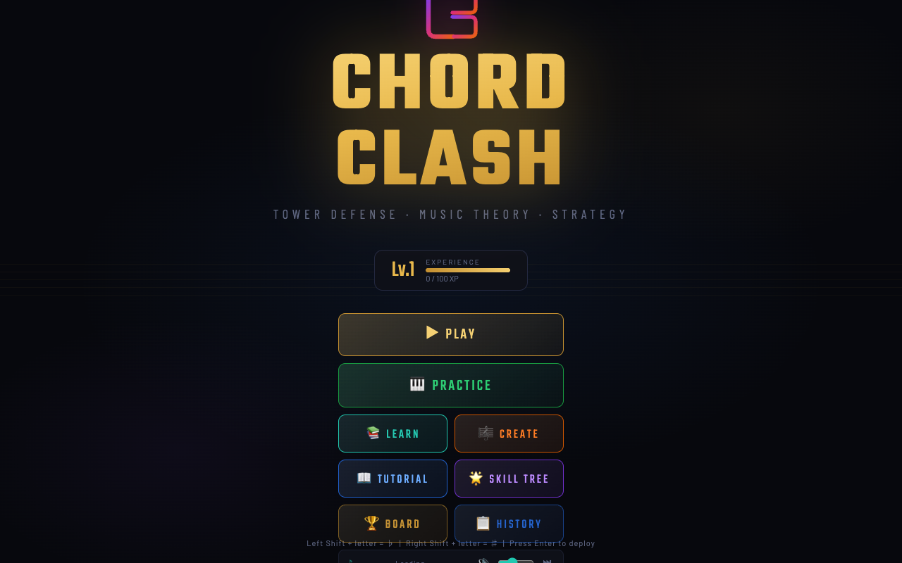

Investo
Financial education
Built for ages 8–18 — useful at any age. 30 bite-sized lessons on budgeting, credit, investing, taxes, debt & more.
My roleCo-founder and sole technical developer of the Swift iOS app.


Financial education
Built for ages 8–18 — useful at any age. 30 bite-sized lessons on budgeting, credit, investing, taxes, debt & more.
My roleCo-founder and sole technical developer of the Swift iOS app.


Education / Founder & CEO
Founded Bruxel Academy LLC. Projects: Prepxa and LearnTeachArt.
My roleLed iOS app development using Swift to manage users, scheduling, and session tracking.

Team project with J.B. Hunt
TalentIQ is a team project we developed with J.B. Hunt: a universal web app for career-fair candidate check-in and recruiter review. Candidates use the public form from a QR code; approved recruiters sign in with a TalentIQ email and password to review records, capture notes, verify AI-assisted drafts and interview questions, compare candidates, and download an Excel workbook.

Music theory / tower defense
Music Theory is unintuitive and painful to learn. But it doesn’t have to be! Chord Clash helps make it fun and exciting. Chord Clash is a game that trains people on recognizing and producing chords and chord progressions.
Privacy-first hair-progress tracking with guided photos, browser-based computer vision, and non-diagnostic guidance. Four-person team project for United Hacks V7.
Developed an AI-powered application with peers that helps mediate relationship problems. Delivered a functional prototype during an intense 40+ hour hackathon weekend (United Hacks V6).
Developed an AI-powered application addressing legal accessibility challenges at United Hacks V5 (40+ hour hackathon). Built a functional AI Lawyer tool using rapid prototyping.
Ideated and developed Course Compass, an all-in-one student app, with peers using Swift. Currently discussing potential deployment with the school district.
Built a data-driven traffic simulation model to reduce congestion using Python (Pandas, NumPy). Presented recommendations to city planners.
Conducted vulnerability analysis on web applications in collaboration with Oklahoma Baptist University. Developed mitigation strategies and a technical report.
Proposed an RFID-based system to optimize inventory management and in-store customer flow using data analytics and operational modeling.
Designed a 3D simulated sensory room to support students with special needs. Focused on accessibility, inclusion, and cost-effective resource allocation.
Built a production-ready MVP website for the Indian Cultural Association of Northwest Arkansas. Trained stakeholders on deployment and content management.